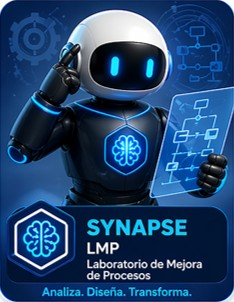

Levantar proceso nuevo desde cero
Usa esta ruta cuando el proceso será levantado mediante preentrevista, entrevista, observación o captura manual.
Ruta esperada: Preparación → Contexto → Carga y consolidación.

Módulo integrado del SGMP para levantar, consolidar, analizar y transformar procesos. Incluye rutas de inicio, instrumentos previos, consolidación de JSON, estructura AS IS, análisis Lean Six Sigma, decisión AS IS vs TO BE, selección de mejoras y resultados finales.
Selecciona si vas a iniciar un proceso dentro del LMP o si vas a continuar desde un archivo JSON previamente generado.
Usa estas opciones cuando el proceso todavía no ha pasado formalmente por el flujo LMP.
Usa esta ruta cuando el proceso será levantado mediante preentrevista, entrevista, observación o captura manual.
Usa esta ruta cuando ya existen SIPOC, Visio, PDF, manuales, procedimientos, instructivos u otra evidencia documental previa.
Usa estas opciones solo cuando ya tengas un archivo JSON generado previamente por el LMP.
Carga un respaldo parcial del LMP para continuar exactamente desde la etapa guardada.
Carga un JSON final generado por LMP para trabajar sobre una versión ya cerrada.
Usa esta sección cuando el proceso ya cuenta con SIPOC, Visio, PDF, manual, procedimiento, instructivo u otra evidencia documental previa.
Convertir documentación existente en una estructura limpia antes de enviarla a MASTER A. En esta etapa no se analiza, no se mejora y no se diseña TO BE. Solo se ordena la información documental.
Por ahora, esta sección queda preparada como punto de entrada. En el siguiente ajuste se incorporará el Prompt 0 y la generación del JSON intermedio.
Configura los parámetros base del proceso y genera los instrumentos externos que luego se usarán fuera del LMP. Esta pantalla no muestra formularios largos; solo prepara y descarga los HTML independientes.
Estos datos viajarán precargados al HTML de preentrevista, entrevista y brief.
Cada botón genera un HTML externo independiente, con contexto precargado, listo para descargarse y usarse fuera del LMP.
Revisa el contexto heredado desde Preparación, agrega observaciones y define indicadores globales simples.
Estos datos vienen desde Preparación y alimentan el análisis con IA. Solo se muestran para revisión.
Define indicadores de alto nivel con nombre y descripción breve. Se mostrarán como chips eliminables.
Esta etapa opera en dos subfases: A) construcción del Brief oficial y B) análisis completo desde Brief aprobado.
Consolidado base para construir el Brief. Aquí se unifican preentrevistas, entrevistas y anexos.
Genera el prompt para construir el Brief oficial a partir del objeto maestro.
Pega aquí la respuesta IA del Prompt MASTER A. El sistema construirá el brief editable y no permitirá análisis profundo hasta que el brief quede aprobado.
Revisa, ajusta y valida el brief oficial. Este brief aprobado es el único insumo permitido para el análisis profundo.
Solo se habilita cuando el Brief fue aprobado. Usa el brief oficial y los complementos externos para generar el análisis completo.
Pega aquí la respuesta del Prompt MASTER B. El sistema debe poder procesar estructuras parciales sin romper el flujo.
Revisa y valida la estructura AS IS propuesta por la IA. Puedes ajustarla manualmente si es necesario, pero no parte vacía.
Genera una lectura Lean Six Sigma del proceso actual: AVA, desperdicios, problemas, quick wins y restricciones.
Decide si el proceso cierra con AS IS o si continúa a TO BE. Esta decisión gobierna la siguiente etapa.
Usa esta opción si el proceso debe terminar formalizado en su estado actual sin construir estado futuro.
Usa esta opción si el proceso avanzará a evaluación de mejoras y definición del estado futuro.
Evalúa cada mejora propuesta. El usuario decide si la ejecuta, la ajusta o la descarta. Solo las aceptadas o ajustadas alimentarán los resultados.
Genera JSON SB compatible, informe ejecutivo, informe técnico, plan de implementación y los entregables listos para el Evaluador Documental y el Integrador.